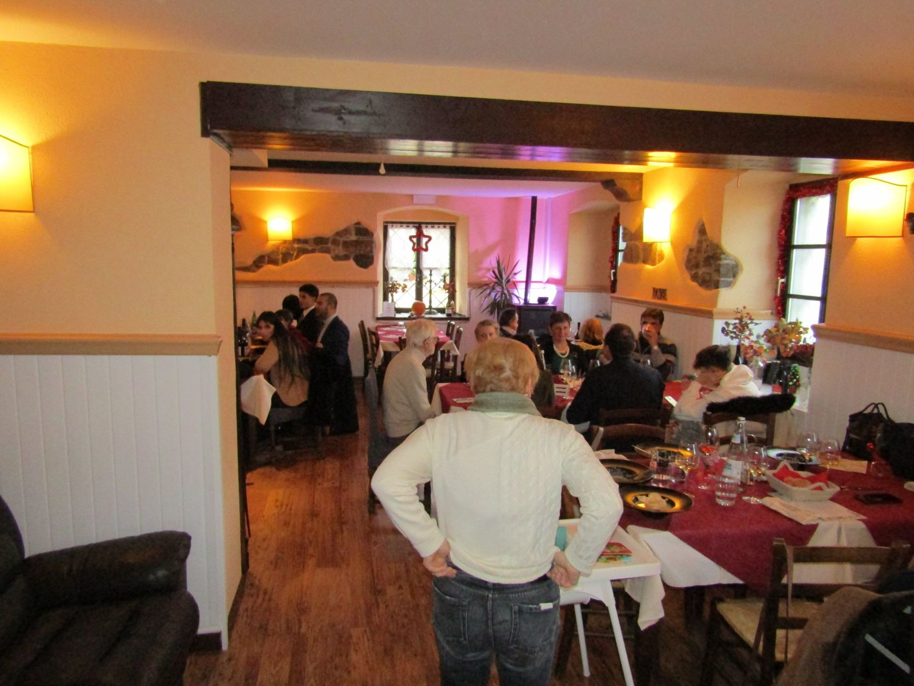
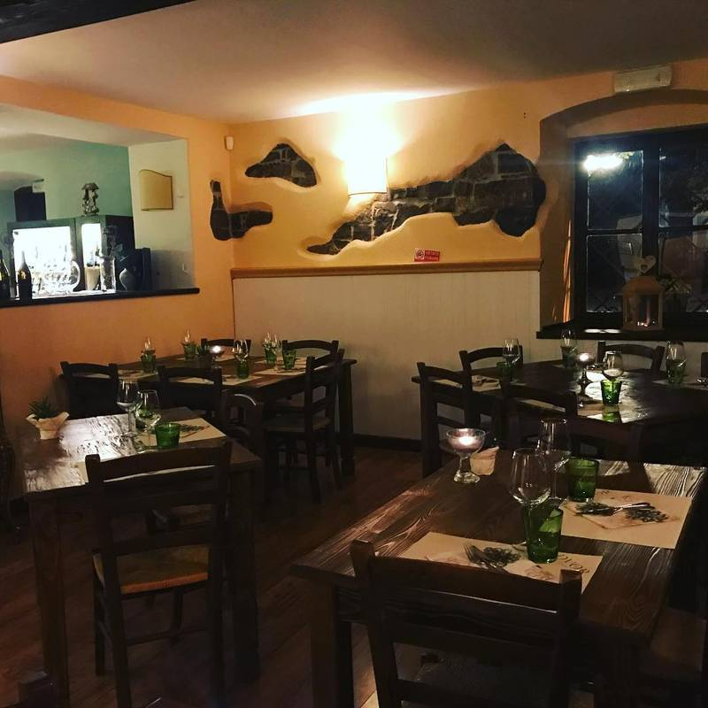
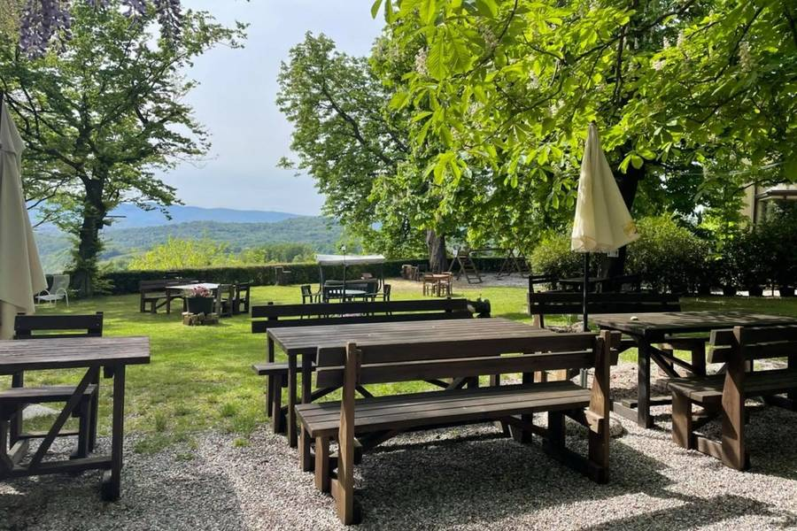
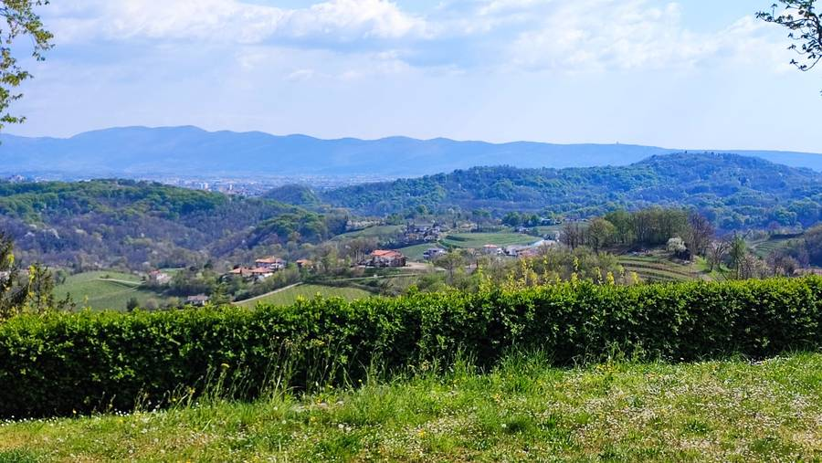

Fate festa a casa nostraCelebrate at our placeFeiern Sie bei unsPraznujte pri nasVier het feest bij ons
Dalla cena intima alla grande serata con musica: ci occupiamo di cucina, allestimento e atmosfera, perché tu possa goderti i tuoi ospiti.From an intimate dinner to a big evening with music: we take care of the food, the set-up and the atmosphere, so you can enjoy your guests.Vom intimen Dinner bis zum großen Abend mit Musik: Wir kümmern uns um Küche, Aufbau und Atmosphäre, damit Sie Ihre Gäste genießen können.Od intimne večerje do velikega večera z glasbo: poskrbimo za kuhinjo, ureditev in vzdušje, da lahko vi uživate v svojih gostih.Van een intiem diner tot een groot muziekfeest: wij zorgen voor keuken, inrichting en sfeer, zodat jij van je gasten kunt genieten.

Feste su misuraTailor-made partiesMaßgeschneiderte FeiernZabave po meriFeesten op maat
- Cene private, cocktail party e serate a temaPrivate dinners, cocktail parties and themed eveningsPrivate Dinner, Cocktailpartys und ThemenabendeZasebne večerje, koktajl zabave in tematski večeriPrivédiners, cocktailparty’s en themaavonden
- Musica dal vivo e DJ setLive music and DJ setsLivemusik und DJ-SetsGlasba v živo in DJ nastopiLive muziek en DJ-sets
- Progettazione di luci e audioLighting and sound designLicht- und TonplanungNačrtovanje luči in zvokaLicht- en geluidsontwerp
- Bar e mixologyBar and mixologyBar und MixologieBar in mixologijaBar en mixologie
- Decorazioni a temaThemed decorationsThematische DekorationTematska dekoracijaDecoratie op thema
- Menù anche vegetariani, vegani e per intolleranzeMenus also vegetarian, vegan and for intolerancesMenüs auch vegetarisch, vegan und für UnverträglichkeitenJedilniki tudi vegetarijanski, veganski in za intoleranceMenu’s ook vegetarisch, veganistisch en bij intoleranties
Come funzionaHow it worksSo funktioniert esKako potekaZo werkt het
Raccontaci l'ideaTell us your ideaErzählen Sie uns Ihre IdeePovejte nam zamiselVertel ons je idee
Data, numero di ospiti ed esigenze: scrivici, chiamaci o mandaci un messaggio su WhatsApp.Date, number of guests and needs: write, call or message us on WhatsApp.Datum, Gästezahl und Wünsche: schreiben Sie uns, rufen Sie an oder melden Sie sich per WhatsApp.Datum, število gostov in želje: pišite nam, pokličite ali nam pošljite sporočilo na WhatsApp.Datum, aantal gasten en wensen: mail, bel of app ons via WhatsApp.
Ricevi una propostaGet a proposalSie erhalten einen VorschlagPrejmete predlogOntvang een voorstel
Ti inviamo menù e preventivo chiari, da affinare insieme fino a quando è perfetto.We send a clear menu and quote, to refine together until it is just right.Wir senden Ihnen ein klares Menü und Angebot, das wir gemeinsam verfeinern, bis alles passt.Pošljemo vam jasen jedilnik in ponudbo, ki ju skupaj izpilimo, dokler ni vse popolno.We sturen een duidelijk menu en offerte, die we samen verfijnen tot alles klopt.
Ci pensiamo noiWe take care of itWir kümmern unsPoskrbimo miWij regelen het
Il giorno dell'evento il nostro staff cura cucina, sala e dettagli: tu pensi solo a stare con i tuoi ospiti.On the day, our team looks after the kitchen, the room and the details: you simply enjoy your guests.Am Tag selbst kümmert sich unser Team um Küche, Saal und Details: Sie genießen Ihre Gäste.Na dan dogodka naša ekipa poskrbi za kuhinjo, jedilnico in podrobnosti: vi uživate v družbi gostov.Op de dag zelf zorgt ons team voor keuken, zaal en details: jij geniet van je gasten.
Scopri ancheDiscover alsoEntdecken Sie auchOdkrijte tudiOntdek ook

Cene aziendaliCompany dinnersFirmenessenPoslovne večerjeBedrijfsdiners
Cene di lavoro, fine anno e incontri con clienti.Business dinners, year-end events and client meetings.Geschäftsessen, Jahresabschluss und Kundentreffen.Poslovne večerje, konec leta in srečanja s strankami.Zakelijke diners, eindejaarsfeesten en klantafspraken.

Comunioni e battesimiCommunions and baptismsKommunionen und TaufenObhajila in krstiCommunies en doopfeesten
Il pranzo di famiglia per le tappe più importanti.The family lunch for life's big milestones.Das Familienessen für die großen Momente.Družinsko kosilo ob najpomembnejših trenutkih.De familielunch bij de grote momenten.

Colazioni e brunchBreakfasts and brunchFrühstück und BrunchZajtrki in brunchOntbijt en brunch
Dolce e salato tra le colline, su prenotazione.Sweet and savoury among the hills, by reservation.Süß und herzhaft zwischen den Hügeln, auf Reservierung.Sladko in slano med griči, po predhodni rezervaciji.Zoet en hartig tussen de heuvels, op reservering.
Tutti i serviziAll servicesAlle ServicesVse storitveAlle diensten
Raccontaci il tuo eventoTell us about your eventErzählen Sie uns von Ihrer VeranstaltungPovejte nam o svojem dogodkuVertel ons over je evenement
Scrivici o chiamaci con la data, il numero di ospiti e le tue idee, e ti risponderemo con una proposta.Write or call with the date, the number of guests and your ideas, and we will reply with a proposal.Schreiben oder rufen Sie uns an, mit Datum, Gästezahl und Ihren Ideen, und wir antworten mit einem Vorschlag.Pišite nam ali pokličite z datumom, številom gostov in svojimi zamislimi, mi pa vam odgovorimo s predlogom.Schrijf of bel ons met de datum, het aantal gasten en je ideeën, en we antwoorden met een voorstel.